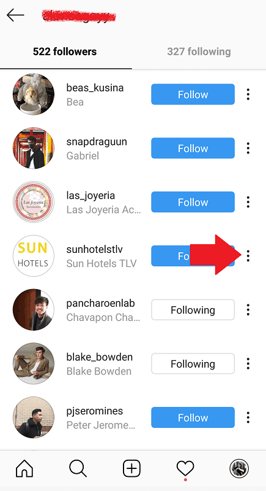
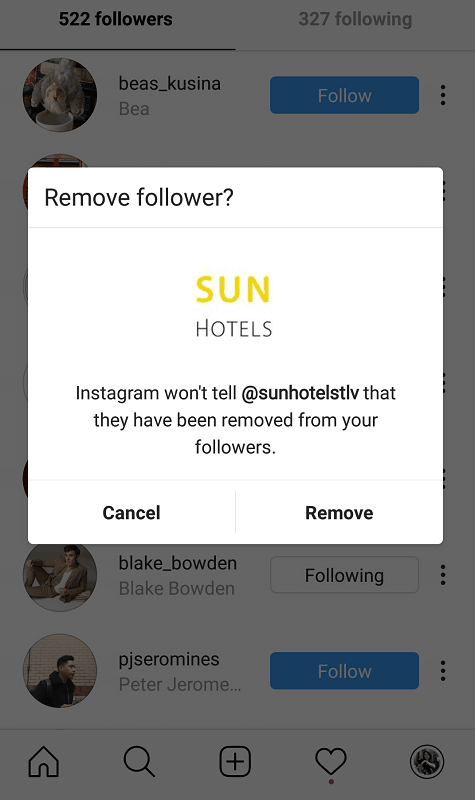
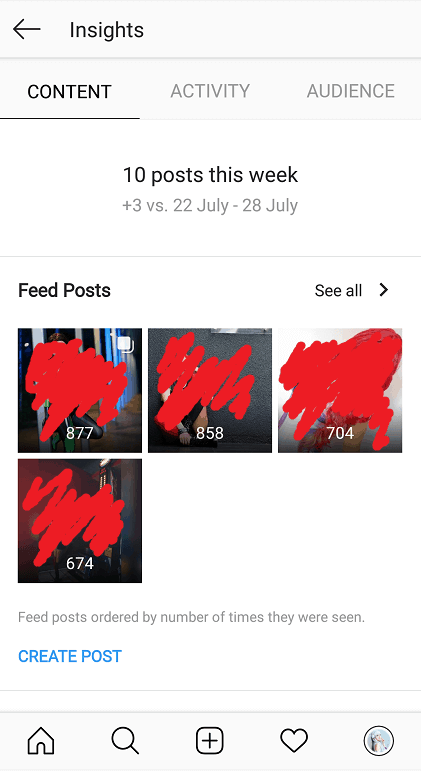

Does Instagram remove followers? How do I grow my current following? Why does it all matter, anyway?
In the wild, often confusing world of Instagram growth, a key measure of success is one’s follower count. This determines the reliability, the popularity, and the quality of a profile; and yet, is one of the hardest aspects to build on.
Why Instagram Followers Are Important
Instagram followers provide your account with the social proof it needs to gain a solid reputation. A high follower count often points to a profile of value, one offering content that’s helpful and worthwhile.
If you’re marketing a retail business on Instagram, a large following lets viewers know that your products are of quality. An influencer backed by thousands of followers implies exquisite talent, skill – or simply, a captivating lifestyle.

Courtesy of theboystv (Instagram account).
While the numbers may seem trivial, Instagram followers are crucial for profile success. They build an audience base that not only buys your product, but engages with your online affairs, as well. In the age of the Internet, where information travels faster than any other medium – these people can help effectively spread your message and what you stand for.
Can I Remove Instagram Followers?
With a public account, anyone on the app is free to follow you and your content.
For the more private users out there, however – potential followers will need to send a request before accessing your Instagram posts.
These are follower counts that are thus limited to close friends and personal connections. Unlike public profiles, you’ve got the added feature of removing specific people from this list, if necessary.
To do this, simply access your follower list, and tap the three dots to the right of the follower you wish to remove.

An option should pop up with a prompt to remove this user. Tap on this, and the person is now barred from viewing future content.

How to Get More Instagram Followers
And now we’ve come to the meat of the article – the ever-complex goal of growing your Instagram followers.
There are many ways to go about this, though we’ve listed some of the most effective methods below – along with available or online tools to aid your efforts.
Tip #1 – Publish Quality Content On A Consistent Schedule
It’s one of the most obvious strategies, yet may just be the hardest to pull off.
Owning an Instagram account involves more than just churning out photos by the day – they’ve got to captivate, entertain, or at the very least, attract your viewer’s attention.
As such, aim to have a feed that offers unique, outstanding media content. National Geographic is a prime example of this, sharing quality images of animals, landscapes, and people of varying cultures. Anyone with an interest in the world and its wonders is bound to hit that blue “Follow” button, curious to see more.
Courtesy of natgeo (Instagram account).
Those looking to grow their account on the app can’t get lazy with content. With over one billion monthly users on Instagram, standing out has become a more crucial goal than ever before.
But attractive images aren’t the be-all, end-all of growing your following, either. If you aren’t consistent with your uploads, you’re giving your audience less of reason to stay connected.
So alongside your pretty photos and images, ensure you’re also posting on a regular, consistent basis. This helps keep you relevant and leaves followers awaiting your next new post.
There’s An App For That: Later
Manual posting on a regular, frequent basis can be a bit of a hassle. On busy days, we may forget to update our profile – leaving large chunks of time in-between Instagram posts.

Courtesy of Later.
Fortunately, with automatic Instagram schedulers like Later, you can hash out a week’s content in one sitting – at let the app publish for you at designated times.
Later provides its Instagrammers with a user-friendly visual calendar, helping you plan your content in advance. Simply upload the media you wish to use, and drag and drop them to your desired dates and times. You can then add your captions and hashtags, and schedule it for auto-posting.

Courtesy of Later.
With its preview feature, you can also view how your planned posts come together to create a cohesive, visual feed.
Tip #2 – Have A Distinct Theme or Aesthetic
The best Instagram accounts often have a unified visual theme that ties everything together. This helps establish a distinguishable brand image, and is overall more visually appealing than a randomized, messy feed.
Mailchimp, for example, plays with pastel retro colors while experimenting with various visual forms – such as mosaics, animations, or poster graphics.

Courtesy of mailchimp (Instagram account).
They’ve developed their own unique sense of style, while having a feed that’s interesting to look through.
Some profiles may gradually change their theme, depending on their current media campaign.

Courtesy of jayjays (Instagram account).
Australian clothing brand, JayJays, for example, currently has a color palette comprised of whites, light pinks, and soft blues; though further down their feed, these transform into brighter reds and oranges for a separate clothing collection.

Courtesy of jayjays (Instagram account).
As a platform comprised of images and videos, it’s important to optimize the visual aspects of Instagram – and use this to establish brand identity.
Tip #3 – Have An Instagram Manager
Let’s face it: maintaining an Instagram is hard work.
Maintaining regular, creative content and having an active marketing strategy is even more challenging.
For the busiest of us – it can be near impossible to successfully manage both. This is where a virtual Instagram manager comes in.
Instagram managers are like online gurus or assistants, dedicated to growing your account by taking care of the menial marketing stuff for you. This could include interactions with others in the community, following competitors, and even comment engagement.
These guys help keep your presence active and relevant on the platform. You, on the other hand, can focus on the more pressing aspects of your account: creative, valuable content.
There’s A Service For That: Upleap
Upleap is an Instagram marketing service that offers just this – your very own virtual manager.
This company is comprised of Instagram experts that know just how to grow your account – and quickly, at that. The setup is simple; upon signing up on their websites, you’ll then be asked a series of questions regarding your brand and objectives.

Courtesy of Upleap.
This quick Q&A will help your new manager determine your specific niche and competitors. Once that’s arranged, they’ll then get to work interacting with related accounts, helping get your profile name on their radar.

Courtesy of Upleap.
This activity is a completely risk-free way of raising your profile visibility within your niche. Upleap managers will consistently like posts and view stories of similar accounts, maintaining an active, relevant presence. Soon enough, you’ll catch the attention potential followers, and effectively grow your audience base.
Tip #4 – Engage With Your Instagram Followers
Sometimes, we can get too wrapped up in content production to remember the social aspects of this platform. While pretty photos and videos are crucial – social connections are, as well.
Engaging with your followers is just as important as knowing how to gain them. Replying or even simply liking their comments can help boost follower (or customer) loyalty, and lets them know you care about their input

Courtesy of drunkelephant (Instagram account).
Who knows, they may even turn into valuable business or personal connections over time.
But it doesn’t just end with your own followers – growing a loyal audience base may require some reaching out of your own.
Brands frequently interact with influential figures in their community, leaving friendly, often complimentary comments. If they don’t get noticed by the actual user themselves, they may just find traction among the user’s followers.

Courtesy of michellephan (Instagram account).
Of course, this works best with a genuine message; rather than one that appears desperate and sales-y. Users who comment with the sole purpose of driving viewers to their profile come off spammy, intrusive, and pushy.
There’s An App For That: Kenji
While it may not leave heartfelt comments, Kenji offers users with a similar service to that of Upleap. However, instead of a myriad of marketing tasks, this app is an AI-powered bot dedicated to liking the content of your competitors and others within your niche.

Courtesy of Kenji.
As with Upleap, this frequent activity helps boost your profile exposure. Users who receive your like are bound to find you in their notifications, and if they’re interested enough, they’ll tap through to view your content. It’s an instant boost in reach!

Courtesy of Kenji.
Users tend to recoil at the thought of an Instagram “bot” – after all, they haven’t made the greatest reputation for themselves. However, Kenji ensures 100% safety of your account, refraining from any spammy activity or behaviour. This means the software will stick to simply liking content. There are no comments or direct messages sent on your behalf, and the app ensures engagement with real, active users.
Tip #5 – Use Analytics To Post At The Best Times
An Instagram business profile offers a range of new features – one of which is the ability to track your account performance.
Under “Instagram Insights”, users can view their most engaged demographics – including their gender, geographic locations, and age ranges.

You can even view your uploaded posts for the week, and their engagement numbers.
To get more Instagram followers, it helps to know your profile’s optimum times for posting; that is, the dates and specific times your audience is most active.
This is found under the “Audience” tab of your Instagram Insights. The last section display the times of highest follower activity – and can be viewed on an hourly or weekly basis.

This data helps you determine when to upload your content for highest engagement. Pair this up with an automated scheduler, and say hello to a boost in reach.
Tip #6 – Use The Right Hashtags
One of the biggest features of the Instagram platform is the ability to use hashtags. These categorize your content into the appropriate channels for those in your niche to discover.
Using the right tags on your post is a simple, yet effective way of getting it seen by all the right people. For example, travel accounts will likely use phrases such as “#wanderlust” or “#adventure” in their hashtags. Those searching for these tags (who are likely in the travel community themselves) will conveniently stumble upon your content, as a result.

However, it helps to know the specific terms and slang your community uses in their hashtags. While travel-based accounts are bound to use generic terms such as those discussed above, many avid users in this niche also use tags such as “#wearetravelgirls” or “#discoverunder100k”.

Courtesy of ralu_teodorescu (Instagram account).
They may not sound like common terms – but they’re popularly used among the community, and can help add to your traffic. These niche-specific phrases are also likely to have less user competition than general words such as “#travel” and “#backpacker”.
Tip #7 – Host a Contest
Finally, hosting Instagram contests is a fun, interactive way of gaining traffic, user-generated content, and loyal new followers.
This can be done in a various ways, though the most common among businesses is an Instagram giveaway.
An Instagram giveaway incentivizes users to like your post, follow your profile, or upload their own content using your branded hashtag – in exchange for free products or services.
For example, Freeman Beauty’s giveaway below offers an entire bundle of free cosmetics. To participate, users must follow their profile and tag a friend in the comments. The process then works like a raffle, and a winner is randomly chosen. They get a bunch of free products, while the brand gains a ton of engagement on their post and profile.

Courtesy of freemanbeauty (Instagram account).
Lumix India offers a more creative form of participation with their latest giveaway, getting users to upload content as part of their photography contest. To enter, they must simply use their branded hashtag “#StreetFoodofIndia”. This spurs free marketing for the brand, while users involved get a chance to win a free phone.

Courtesy of lumixindia (Instagram account).
Does Instagram Remove Followers?
Now that we’ve run through the most effective strategies of growing your Instagram following – one concerning question remains: can Instagram, at any point, remove your Instagram followers?
Well, yes – and no.
Instagram can and will remove certain followers, if they’re deemed fake or bot accounts. This news arose late last year in the wake of third-party apps creating empty, fake profiles to boost people’s follower counts. Since then. the company has cracked down on these inauthentic likes, follows, and comments – removing them from user profiles.
Those involved with such apps were notified by Instagram to cut their ties, and any continued use may result in “[seeing] their Instagram experience impacted”.
However, any real, genuine followers on your list should be safe, unless they choose to opt out of your audience base themselves. Thankfully, any of the services or third-party apps mentioned above focus on exclusively engaging with real, authentic users.
Grow Your Instagram Followers With Socialfollow!
As discussed, Instagram frowns upon followers comprised of bot accounts that simply designed to raise a number.
However, with Socialfollow, you get the best of both worlds: an app that offers quick, genuine growth with actual, authentic users who enjoy the same interests as you.

Courtesy of Socialfollow.
Best of all, it’s completely for free! The platform works through a four-step process. Just sign up with your name and e-mail – no password required. You’ll then define your profile through a number of interests. Then, you’re required to follow up to 10 people based on the niches you’ve specified, and the app offers you 50 active followers in return.

Courtesy of Socialfollow.
This can be done once daily, leading to up to 1500 followers a month!
Try the service today, and watch your followers skyrocket in a matter of weeks; no strings attached.


3 Comments